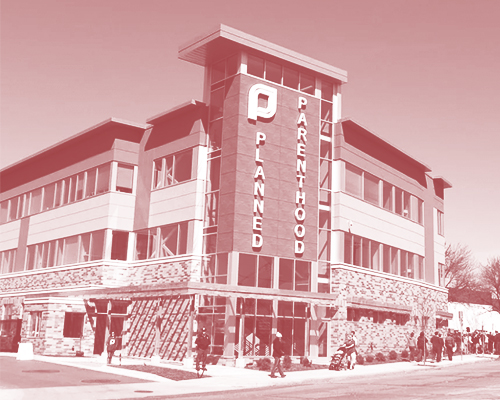
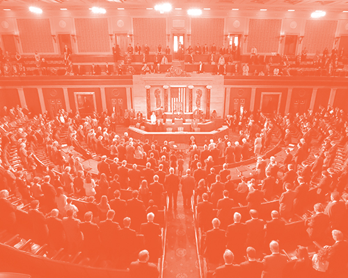
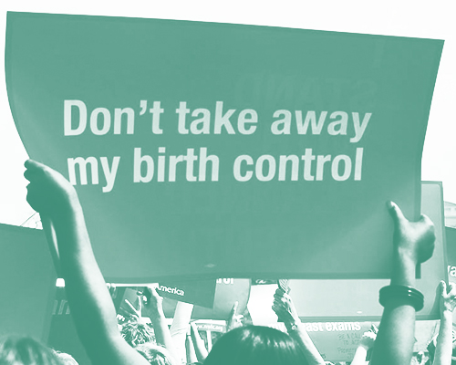
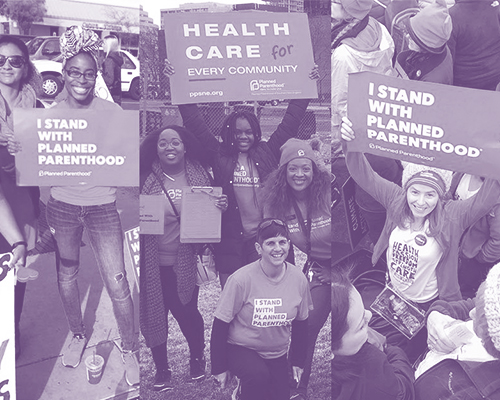

Planned Parenthood is a nonprofit organization that provides reproductive health care globally. Its health centers provide health care to 2.4 million people a year. Services include (but are not limited to) contraceptives, breast exams, cervical cancer screening, pregnancy testing, sex education, vasectomies, and testing and treatment for sexually transmitted infections.
Planned Parenthood has been a target by pro-life activists for decades because they provide abortion services. Although Planned Parenthood denies that funding recieved from the government is used to fund abortions and are instead used for other services such as contraceptives and cancer screenings, activists argue that funding helps with other resources that are, in turn, used to provide abortions.
By Congress trying to defund Planned Parenthood, legislators are essentially preventing patients who rely on public health care programs (such as Medicaid and Title X) from getting essential reproductive health care. About 60% of PP patients reply on these programs to get care, and if they are successful and defunding it, millions (remember, they cater to 2.4 million people every year) would lose access to things such as cancer screenings, birth control, and STD testing and treatments. Defunding PP would also make safe abortion harder to access, or even unavailable, to the general public.
Just simply being informed about the situation and educating others on it can help immensely. Spread awareness on what Congress may do to the nation’s leading reproductive health care provider! You can call your elected officials or even tag them on social media (they are listening!) and let them know you stand with Planned Parenthood. Donating to the organization is also an option: you can do so when you visit their clinics or online. You can also call your local clinic and ask if they are in need of volunteers. Positions can include clinic escorts: volunteers that help people who are coming in for services feel welcomed as well as keep them safe from protesting activists.
BACK